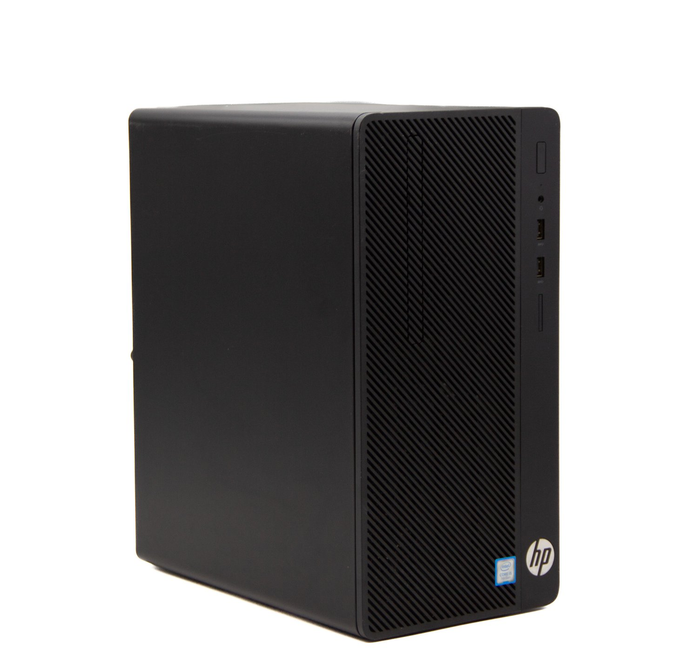

Homelab - Day 5 - The NAS
Posted on Wed 18 June 2025 in homelab

So, it's been a while and I have made some progress worth sharing!
After keeping an eye on the auction sites for a while I ended up pulling the plug and buying 2 12TB Seagate Ironwolf drives for my NAS and now wanted to get started with setting this up.
The hardware
Off a recommendation from Joe at Late Night Linux I picked up a HP 290 G2 I5-8500. It comes with 8GB of RAM and a 256ssd. The form factor is reasonably nice and it fit the two drives perfectly and it's been chugging along well.
The software
As this was very much a learning experience for me I wanted to do this from scratch. So I opted for something familiar OS wise so I could focus more on getting the NAS itself setup.
It's running Ubuntu 24.04 LTS and I have the NAS drives setup using as ZFS mirrors. Based also on Joe's suggestion I set it up using dataset, this allows you to logically separate your ZFS drive and apply different rules to them, eg compression or backups depending on the data you're storing.
What it might look like:
sudo zfs create nas/media
sudo zfs create nas/important
sudo zfs create nas/k8s
sudo zfs create nas/tmp
sudo zfs create nas/backups
Then setting different rules like compression would be:
sudo zfs set compression=lz4 nas/media
sudo zfs set compression=lz4 nas/important
sudo zfs set compression=lz4 nas/k8s
sudo zfs set compression=lz4 nas/backups
To do snapshot you install zfs-auto-snapshot and you can then set snapshot policies like so:
sudo zfs set com.sun:auto-snapshot=true nas/important
sudo zfs set com.sun:auto-snapshot=true nas/k8s/nextcloud
To actually serve the files I'm using nfs, which is actually super easy to install, run and configure.
Next steps
Okay so I've got my (hopefully) reliable data storage finally sorted, now it's time to get back to the K8s cluster and see if I can build something helpful.